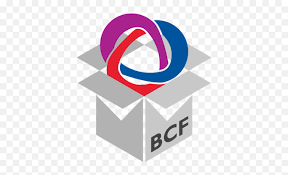

Exchange BCF viewpoints with other BIM software to enhance collaboration and communication.
The xeokit SDK provides support for interoperability with other BIM software through the exchange of
BCF (Building Collaboration Format) Viewpoints,
an open standard that allows exchanging bookmarks of 3D Viewer states.
Understanding BCF Viewpoints
A BCF viewpoint captures a snapshot of an issue within a building project. It includes:
A problem description to communicate issues to team members.
The exact location within the 3D model where the issue occurs.
This facilitates efficient collaboration among project stakeholders by allowing them to share and
review issues directly within the model.
Capture full View state — saveBCFViewpoint serialises
camera (perspective + orthogonal), clipping planes, per-object
visibility / selection / colour / translucency, plus optional
annotation lines and bitmaps.
Restore View state — loadBCFViewpoint applies a viewpoint
onto a View, restoring camera,
section planes, and per-object state in one call.
Snapshot support — optionally embed a base-64 canvas
snapshot in the viewpoint; supply a renderer via
params.renderer to capture it, or omit for snapshot-free
round-trip.
Spec-compliant JSON — viewpoint matches the BCF JSON
schema, ready to drop into a .bcfzip package alongside
issue metadata.
Default-state filter — saveDefaultStates: false
(default) trims objects whose state matches the View default,
keeping viewpoint payloads compact.
Cross-host interop — viewpoints exchange cleanly with
Solibri, BIMcollab, Revit BCF Manager, and any other
BCF-aware client.

xeokit BCF Viewpoint Importer and Exporter
Exchange BCF viewpoints with other BIM software to enhance collaboration and communication.
The xeokit SDK provides support for interoperability with other BIM software through the exchange of BCF (Building Collaboration Format) Viewpoints, an open standard that allows exchanging bookmarks of 3D Viewer states.
Understanding BCF Viewpoints
A BCF viewpoint captures a snapshot of an issue within a building project. It includes:
This facilitates efficient collaboration among project stakeholders by allowing them to share and review issues directly within the model.
Shape
Features
saveBCFViewpointserialises camera (perspective + orthogonal), clipping planes, per-object visibility / selection / colour / translucency, plus optional annotation lines and bitmaps.loadBCFViewpointapplies a viewpoint onto a View, restoring camera, section planes, and per-object state in one call.params.rendererto capture it, or omit for snapshot-free round-trip..bcfzippackage alongside issue metadata.saveDefaultStates: false(default) trims objects whose state matches the View default, keeping viewpoint payloads compact.Installation
Usage
Saving and Loading a View as BCF
This example demonstrates how to:
Once the model is loaded, we can capture a viewpoint:
The saved BCFViewpoint can be restored later:
Saving and Loading a ViewLayer as BCF
ViewLayers allow selective export of ViewObjects. In this example:
foregroundandbackground) are created.The viewpoint is restored only for the
foreground_layer: